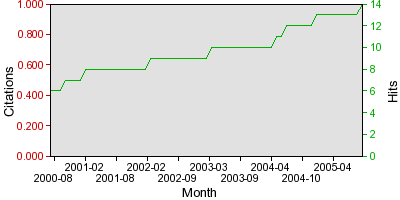

News
Petition for guaranteed public access to publicly-funded research results. (Jan '07)
Thin films of hydrogenated amorphous carbon (a-C:H) deposited by radio
frequency plasma-enhanced chemical vapour deposition (rf-PECVD) have been
studied for various applications. An interesting property of these films is
their high breakdown strength (107 Vcm-1). This property of a-C:H can be
exploited in high breakdown heterostructure diodes or as passivation layers and
insulator layers in MIS devices. Reports on the applications of a-C:H/Si diodes
exist in the literature. Diodes in which the a-C:H films have been deposited by
rf-PECVD, have been reported only once. In this article the diodes produced
reportedly failed to exhibit reproducible I-V characteristics under high
voltage stress. We have investigated the process dependence of structural and
electrical properties of rf-PECVD a-C:H films deposited at room temperature
from a CH4/Ar gas mixture (at a pressure of 100 mTorr) using a capacitively
coupled rf-PECVD. We observe a clear correlation between the dc-self bias and
the rectification ratio of a-C:H/Si heterojunction diodes. Optimised diodes
show rectification ratios upto 104 and a stable reverse breakdown voltage,
typically around 850 V. I-V and C-V measurements show no evidence of hystersis.
Scanning Electron Microscopy was carried out to determine the quality of the
films deposited. Micro-Raman analysis was used to estimate the ID/IG ratio in
the films deposited under different dc-self bias.
Comment: 6 pages, 4 figures
Citebase
is currently only an experimental demonstration. Users are cautioned
not to use it for academic evaluation yet. Citation coverage and
analysis is
incomplete and hit coverage and analysis is both
incomplete and
noisy.
|
| To this article |
0 |
14 |
| To authors (mean) |
0.00 |
14.00 |

About this Record
Citebase Search is Copyright 2005-2007 Tim Brody <tdb01r@ecs.soton.ac.uk>, University of Southampton. Got a comment/question about Citebase? Please email me!
Full-texts, references and metadata are the copyright of the named author(s) and/or the respective publisher(s).